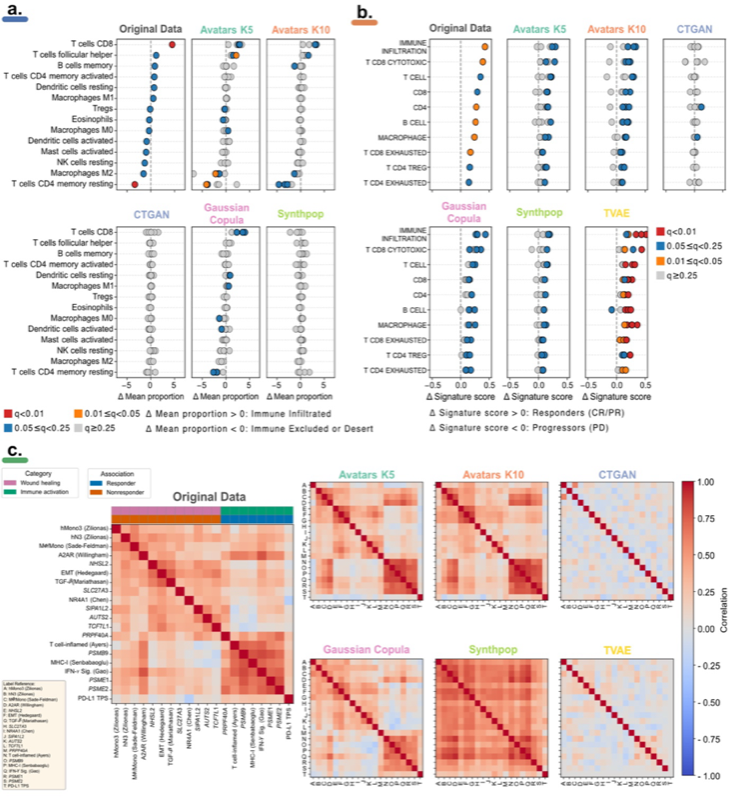

Cell Type Deconvolution Analysis¶
Overview¶
Cell type deconvolution represents one of the most sophisticated and biologically meaningful narrow utility tests in the SynOmicBench framework. In bulk transcriptomic data, each sample is a complex mixture of different cell types, including malignant cells, stromal components, and infiltrating immune cells. Deconvolution algorithms aim to computationally estimate the relative proportions of these constituent cell types from the bulk gene expression profile.
For synthetic transcriptomic data to be considered high-fidelity, it must preserve this intricate "cellular architecture." This means that the synthetic data generation method must accurately capture the gene expression signatures of individual cell types and their relative frequencies within a sample. This evaluation is critical for immuno-oncology research, where the composition of the tumor microenvironment (TME) significantly impacts patient outcomes and responses to immunotherapy.
Methodology¶
SynOmicBench validates the preservation of cell composition using a multi-algorithm approach, ensuring that results are robust and not dependent on a single computational method.
Deconvolution Algorithms¶
We employ several widely-recognized deconvolution methods to estimate cell type proportions in both original and synthetic datasets: * CIBERSORT (Cell-type Identification By Estimating Relative Subsets Of RNA Transcripts): Uses a support vector regression approach to estimate the relative proportions of 22 different human immune cell types (LM22 signature). * quanTIseq: Specifically designed for quantifying immune cell fractions from RNA-seq data, providing absolute cell fractions. * EPIC (Estimate of Proportion of Immune and Cancer cells): Estimates immune and other non-malignant cell types while also quantifying the "other" (primarily cancer) cell fraction.
Evaluation Workflow¶
The evaluation process is systematic: 1. Preprocessing: Bulk RNA-seq data (original and synthetic) is normalized to meet the requirements of the specific deconvolution algorithms (e.g., TPM, RPKM, or CPM). 2. Estimation: Each deconvolution method is applied independently to both datasets, yielding a matrix of samples by cell type proportions. 3. Comparative Analysis: We compare the resulting cell type distributions using several statistical metrics: * Proportion Distribution: Comparing the range and distribution of each cell type (e.g., T cells, B cells, Macrophages) between the original and synthetic cohorts. * Correlation Preservation: Assessing whether the inter-cell-type correlations (e.g., the co-infiltration of different immune cells) are maintained in the synthetic data. * Total Immune Score: Comparing the overall estimated immune infiltration across datasets.
Benchmark Results¶
Our benchmarking reveals that cell deconvolution is a particularly sensitive test of a synthetic method's ability to maintain complex correlation structures.

Figure 7: Comparison of immune cell type proportions (estimated via CIBERSORT and quanTIseq) across original and synthetic datasets. The heatmap and boxplots illustrate the preservation of the immune landscape.Performance Tiers¶
The performance of different synthetic generation methods on the cell deconvolution task falls into several distinct categories:
- Correlation-Preserving (Avatars, Copula): Methods that focus on preserving the multivariate relationship between genes (the correlation structure) consistently perform best. These methods, particularly Avatar-based approaches, maintain the subtle gene co-expression patterns that the deconvolution algorithms use to distinguish between different cell types. The resulting synthetic cell fractions closely match the proportions estimated from original clinical data.
- Generative Models (Diffusion, VAEs): While these models often preserve individual gene distributions (univariate fidelity), they can sometimes "scramble" the finer correlations required for precise deconvolution. The resulting estimated cell fractions may appear homogenized, lacking the sample-to-sample variation seen in original cohorts.
- Low Fidelity (Mode-collapsed GANs): If a synthetic method suffers from mode collapse or ignores feature correlations, the deconvolution results for synthetic samples will be wildly inaccurate or nearly identical across all samples, failing to represent the biological diversity of the tumor microenvironment.
Key Findings¶
Immune Landscape Maintenance
Correlation-preserving methods (Avatars, Copula) are the most effective at maintaining the immune landscape. This is critical for researchers who use synthetic data to study tumor-immune interactions or develop biomarkers for immunotherapy response.
Deconvolution Artifacts
Some generative models can introduce artifacts that lead deconvolution algorithms to overestimate or underestimate certain cell types (e.g., high-ranking B-cell signatures appearing in synthetic data where they were absent in the original). SynOmicBench highlights these discrepancies to prevent researchers from drawing false biological conclusions.
Immuno-oncology Utility
For synthetic data to be truly useful in immuno-oncology, it must demonstrate high fidelity in cell deconvolution. This allows for valid exploration of the tumor microenvironment in synthetic cohorts.
Code Example¶
The following code demonstrates how to execute cell deconvolution-based evaluation using the SynOmicBench API.
import pandas as pd
from synomicbench.evaluation import DeconvolutionEvaluator
from synomicbench.datasets import load_tcga_dataset
# Load the original and synthetic transcriptomic data
original_data = load_tcga_dataset("SKCM", type="original") # Melanoma data
synthetic_data = load_tcga_dataset("SKCM", type="avatar")
# Initialize the evaluator for cell deconvolution
# We use the 'cibersort' method by default, targeting immune cell types
evaluator = DeconvolutionEvaluator(
method="cibersort",
signature="LM22",
normalize_output=True
)
# Run the deconvolution and evaluation pipeline
# This calculates estimated cell proportions and compares them
results = evaluator.evaluate(original_data, synthetic_data)
# Print summary metrics for key immune cell types
print("Correlation of cell fractions (Original vs. Synthetic):")
for cell_type in ["T cells CD8", "B cells naive", "Macrophages M1"]:
correlation = results['metrics'][cell_type]['pearson_corr']
print(f" {cell_type}: {correlation:.4f}")
# Plot the comparison of estimated immune landscapes
# This creates a stacked bar chart or grouped boxplots
results.plot_proportion_comparison(
cell_types=["T cells CD8", "T cells CD4 naive", "NK cells resting"],
plot_type="boxplot",
save_path="immune_landscape_comparison.png"
)
# Export the estimated cell proportions for both datasets
results.original_proportions.to_csv("original_immune_fractions.csv")
results.synthetic_proportions.to_csv("synthetic_immune_fractions.csv")
By subjecting synthetic datasets to cell deconvolution analysis, SynOmicBench provides a deep, biologically-relevant validation that goes far beyond simple statistical similarity, ensuring the clinical relevance of synthetic transcriptomic data.